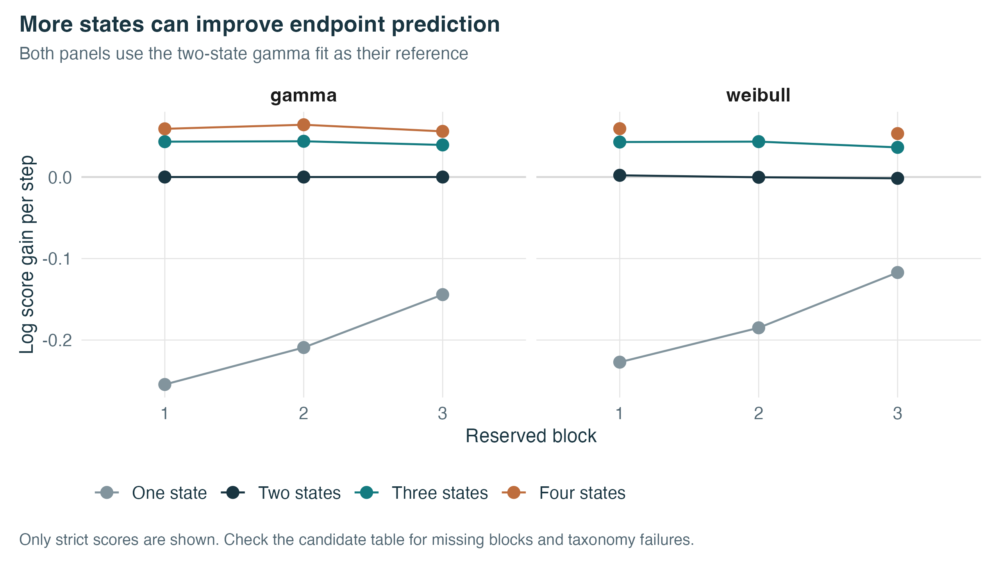
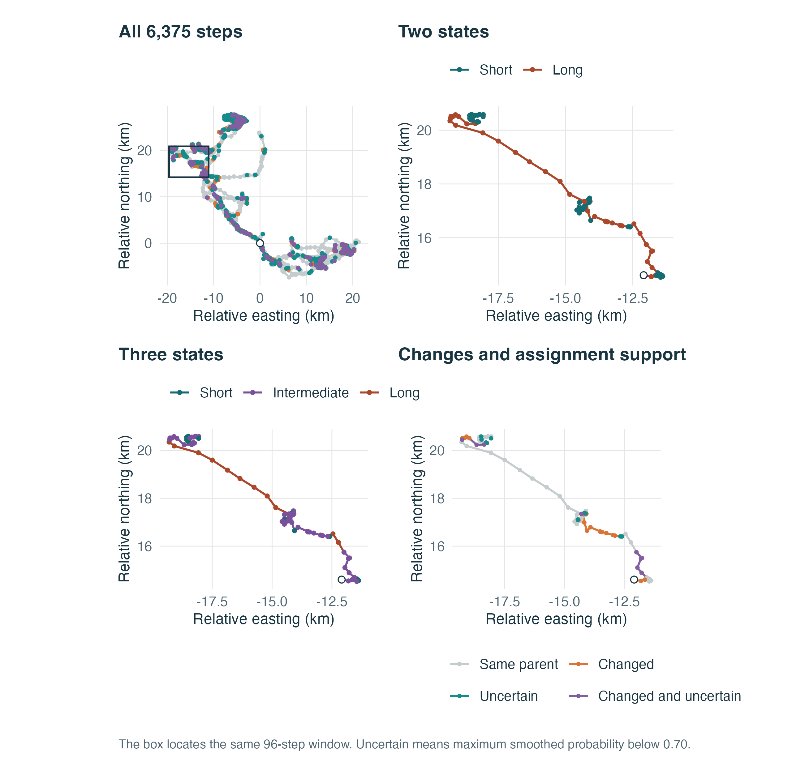
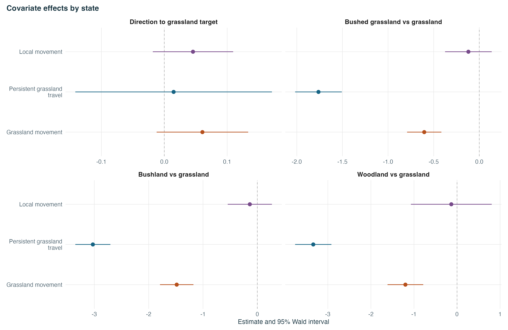
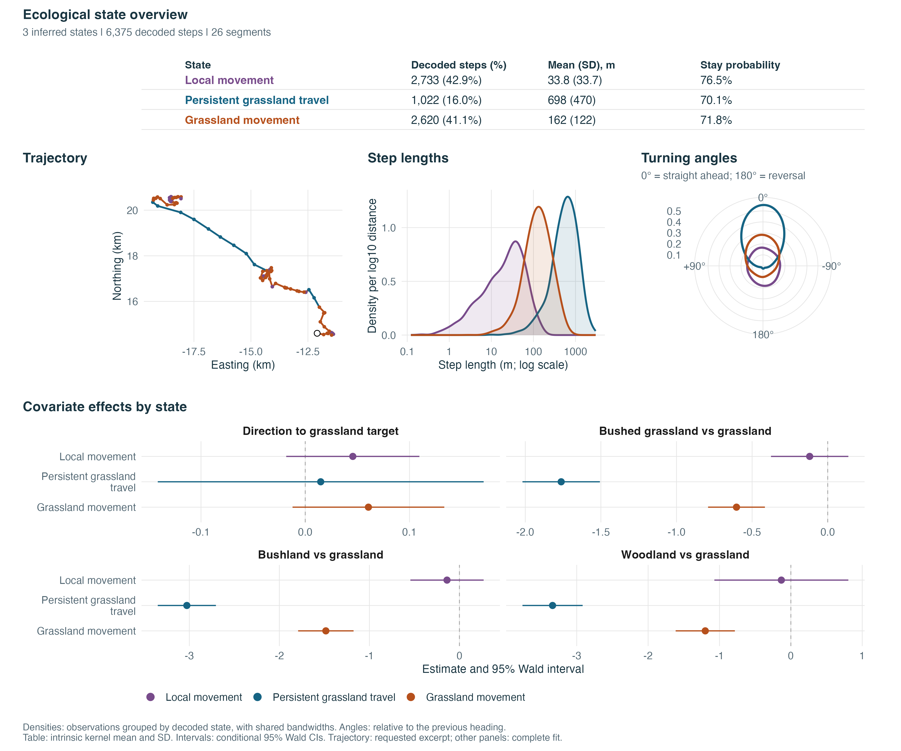
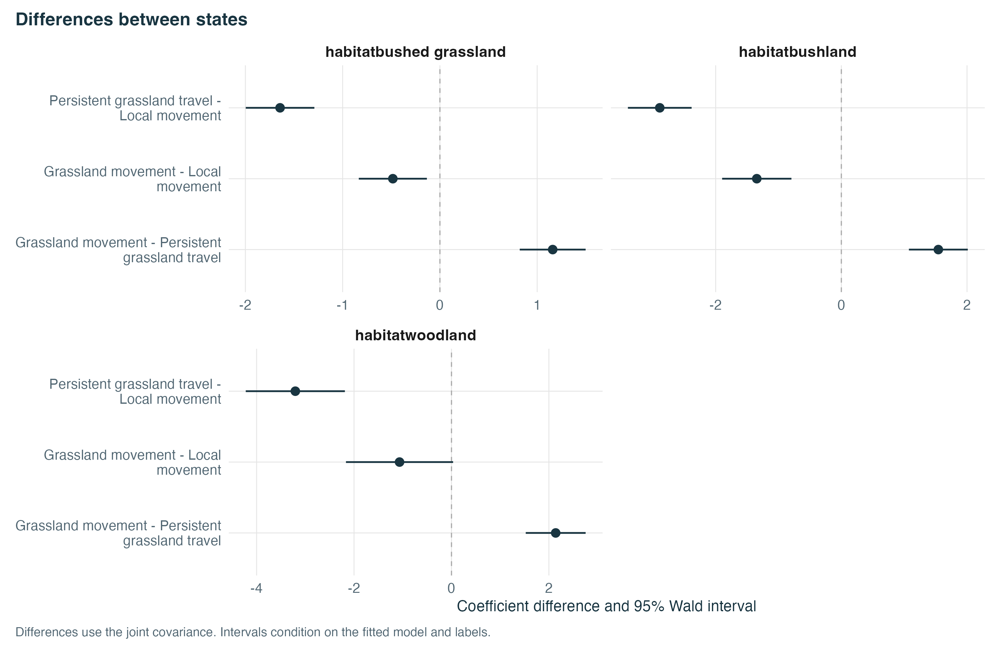

Choose the number of states with your own taxonomy
Source:vignettes/zebra-state-count.Rmd
zebra-state-count.RmdDoes a third state tell us more about the zebra’s movement? We compare one to four states on the Hwange track, using labels and rules that we define ourselves. The first zebra vignette applies the taxonomy from Bouderbala, Nicosia and Fortin (2026). Here we ask a different question about short, intermediate and long steps, with vegetation in the model.
We keep three decisions separate. Did the model fit reliably? Does it satisfy our state definitions? Does it predict reserved observations better? A good predictive score does not settle the ecological interpretation.
The figures below use a saved run shipped with the package. The code to refit it is shown explicitly. Rendering this vignette reads the saved fits rather than repeating the full optimisation.
The full comparison takes about 27 minutes with six workers on the reference macOS machine. Other machines and optimisation outcomes can take longer.
Prepare the same observations and alternatives
The helper reconstructs the choice sets from the archived vegetation grid. It retains 6,375 half-hour steps in 26 segments and draws 128 controls per step from a mixture of gamma and log-normal lengths with uniform turns. It discards 565 proposed controls outside the vegetation map. Every candidate receives the same remaining alternatives. The weights retain the raw mixture density. Conditioning on staying inside the map would multiply all weights within a step by the same factor. That factor cancels from the conditional choice probabilities used here. We do not use these proportional weights to report an absolute physical normaliser. The nearest grassland target is fixed at the beginning of each step.
library(behavSSF)
source(system.file("extdata", "zebra-state-comparison.R",
package = "behavSSF", mustWork = TRUE))
choices <- zebra_state_data(seed = 660301L, n_controls = 128L)
blocks <- ssf_blocks(choices, n_blocks = 3L)ssf_blocks() places chronological cuts near thirds of
the track, while keeping each uninterrupted segment whole. Each block is
reserved once. The other two blocks supply the training data, including
all starting values.
| Block | Steps | Segments |
|---|---|---|
| 1 | 1961 | 9 |
| 2 | 2085 | 15 |
| 3 | 2329 | 2 |
These blocks belong to one animal. They assess prediction on this track, not transfer to a new animal. Whole segments are treated as independent runs. This split trains on both earlier and later segments; it is not a forecast made using past observations alone.
Write down what the labels mean
A taxonomy supplies the labels, an ordering and optional rules. The number of labels sets the number of fitted states. Here the labels follow increasing intrinsic mean step length. For two or more states, we require the largest mean to exceed twice the smallest. That factor is our definition of a useful length contrast, not a behavioural threshold learned by the package.
selection <- ~ cos_angle + cos_diff_theta_to_target + habitat
length_taxonomy <- function(labels) {
force(labels)
ssf_taxonomy(
name = paste0("length_", length(labels)),
labels = labels,
formula = selection,
order_by = "mean_step",
rules = if (length(labels) > 1L) function(s) {
first <- labels[1L]
last <- labels[length(labels)]
c(length_ratio = s$metrics[last, "mean_step"] >
2 * s$metrics[first, "mean_step"])
}
)
}
taxonomies <- lapply(list(
"All steps",
c("Short", "Long"),
c("Short", "Intermediate", "Long"),
c("Shortest", "Short-middle", "Long-middle", "Longest")
), length_taxonomy)Always address a state by its label inside a rule. For example,
s$metrics["Long", "mean_step"] finds the long state even if
the optimiser calls it state 1. The rows are not sorted by length. A
rule must return a named logical vector. FALSE or
NA fails the corresponding check.
With step_family, the formula contains the angular and
selection terms. The package supplies the radial distribution
separately. It therefore does not include step or
log_step in this formula.
Fit all candidates and reserve each block in turn
comparison <- compare_ssf_states(
choices, taxonomies, blocks = blocks,
step_families = c("gamma", "weibull"),
initializers = zebra_state_initializers_extended,
normalization = "importance", short_iter = 100L,
long_iter = 950L, seed = 61001L, workers = 1L,
score_failed_hessian = TRUE
)
comparison
summary(comparison)$block_scoresFor this run, zebra_state_initializers_extended()
supplies a movement-only fit and a start based on groups of observed
lengths. Both are calculated again inside each training split. The
one-state model uses one start. Four-state fits also use training-only
perturbations of the two anchors: eight starts for full-track fits and
four for each held-out training job. For another study, omit
initializers and set n_starts, or supply a
function using training rows only. Choose the start by training
likelihood, never by the reserved score.
The strict screen requires convergence, a positive Hessian, a maximum absolute curvature-scaled gradient no larger than 0.01, agreement between the objective and forward calculation within 1e-7, and valid movement parameters. The taxonomy is then assessed on the retained full-track fit. Its default checks also cover occupancy and self-transition probabilities.
| Family | States | Numerical checks | Taxonomy passed | Blocks scored | Gain over two states |
|---|---|---|---|---|---|
| gamma | 1 | TRUE | TRUE | 3/3 | -0.199 |
| gamma | 2 | TRUE | TRUE | 3/3 | 0.000 |
| gamma | 3 | TRUE | TRUE | 3/3 | 0.042 |
| gamma | 4 | TRUE | FALSE | 3/3 | 0.060 |
| weibull | 1 | TRUE | TRUE | 3/3 | -0.173 |
| weibull | 2 | TRUE | TRUE | 3/3 | 0.000 |
| weibull | 3 | TRUE | TRUE | 3/3 | 0.041 |
| weibull | 4 | TRUE | FALSE | 2/3 | NA |
The score integrates over the hidden states. It is the log
probability of the observed endpoint among its alternatives, not the
proportion of correct behavioural labels. Larger scores predict the
reserved endpoints better. The pooled score weights every step equally
and requires all three blocks. comparison$starts retains
every attempt and its failure reason.
plot(comparison, reference = "gamma::length_2") +
scale_colour_manual(values = c(length_1 = "#82949d", length_2 = "#193541",
length_3 = "#147b80", length_4 = "#be6d3d"),
labels = c(length_1 = "One state", length_2 = "Two states",
length_3 = "Three states", length_4 = "Four states")) +
labs(title = "More states can improve endpoint prediction",
subtitle = "Both panels use the two-state gamma fit as their reference",
colour = NULL) + theme(legend.position = "bottom")
The full-track AIC favours four states in both families. Three states improve on two in every reserved block, with pooled gains of 0.042 and 0.041 nats per step for gamma and Weibull. The regular gamma four-state fits improve on three in every block, by a further 0.0176 nats per step when pooled. The Weibull four-state model has no pooled score because one training block has no numerically eligible fit at this restart budget.
Both full-track four-state fits fail the default taxonomy on occupancy alone. The rarest states contain 318 gamma steps and 317 Weibull steps. A 5% cutoff requires at least 319 of these 6,375 steps. That is a difference of only one or two steps, not evidence that a fourth state does not exist.
occupancy_policy <- do.call(rbind, lapply(c("gamma", "weibull"), function(family) {
fit <- comparison$fits[[paste0(family, "::length_4")]]
do.call(rbind, lapply(c(.04, .05), function(threshold) {
a <- assess_taxonomy(fit, taxonomies[[4]], "area", min_occupancy = threshold)
data.frame(Family = family, Minimum = threshold,
Smallest_state = min(tabulate(fit$state, nbins = 4L)), Accepted = a$accepted)
}))
}))
knitr::kable(occupancy_policy)| Family | Minimum | Smallest_state | Accepted |
|---|---|---|---|
| gamma | 0.04 | 318 | TRUE |
| gamma | 0.05 | 318 | FALSE |
| weibull | 0.04 | 317 | TRUE |
| weibull | 0.05 | 317 | FALSE |
At 4%, both full-track taxonomies pass without changing the fitted model. This is a sensitivity check chosen after seeing the result. It is not a recommendation to lower the cutoff until a preferred answer passes. Decide what occupancy is useful for the ecological question, and report that policy along with prediction and numerical stability.
The table separates fit reliability, the taxonomy decision and prediction. Read all three columns before choosing a state count. A higher score can come from a model whose uncertainty or proposed labels are poorly supported.
| family | numerical_passed | taxonomy_passed | blocks_scored | mean_log_score | point_mean_log_score | |
|---|---|---|---|---|---|---|
| 4 | gamma | TRUE | FALSE | 3 | -4.4735 | -4.4735 |
| 8 | weibull | TRUE | FALSE | 2 | NA | NA |
The main replication attempts eight separate fits for each full-track four-state fit and four for each held-out training fit, using training-only anchors and perturbations. The sensitivity tables record the relative smallest curvature eigenvalue, its condition number and the smallest decoded occupancy for every start. The four highest likelihood full-track starts per family are inspected through their saved state profiles. Their labels are aligned by mean length. Similar likelihoods do not by themselves establish stable state coefficients. If nearly equal likelihoods come with very different profiles, the labels are not settled. Look for a stable pattern that also meets the ecological rules you wrote.
score_failed_hessian = TRUE adds a separate
point-prediction sensitivity analysis. Convergence, the scaled score,
objective agreement and kernel validity still apply, but the Hessian
screen can fail. Those scores remain in
point_mean_log_score; they never replace the strict scores.
A failed curvature check means the usual coefficient intervals are
unavailable. It can reflect difficult optimisation or weak
identification. This diagnostic alone cannot establish which explanation
is responsible.
Five of the forty four-state attempts return errors: four
movement-anchor starts contain zero transition probabilities, and one
produces nonfinite emissions. Sixteen more do not yield a Hessian that
can be scaled. These outcomes remain in comparison$starts;
they are not counted as successful optimisations. The remaining nineteen
pass the strict numerical screen.
The paper replication also moves the block boundaries from
approximately one-third and two-thirds to one-quarter and three-quarters
of the steps, while keeping whole segments. It compares two versus three
states again. These are sensitivity analyses on the same animal, not
independent biological replications. The extended refit settings are in
the manuscript’s replication/compare-zebra-states.R and
zebra-extra-starts.R.
See which steps change label
The intermediate state is partly a subdivision of the former short state. To avoid counting every new name as a change, each three-state label is mapped to the two-state label with which it shares the most steps. Several new states may share the same parent. This mapping describes these fitted sequences; it does not validate the labels against behaviour in the field.
changes <- compare_ssf_state_labels(comparison,
from = "gamma::length_2", to = "gamma::length_3", threshold = .70)
changes$crosswalk
#> to
#> from Short Intermediate Long
#> Short 2732 1897 2
#> Long 1 723 1020
changes$mapping
#> Short Intermediate Long
#> "Short" "Short" "Long"The gamma models disagree on the parent label for 726 steps. Separately, 1384 steps have a largest smoothed probability below 0.70 in the three-state fit. This threshold helps read the map; it is not a calibrated probability of classification error.
d <- changes$steps
# Use the 96-step window from the state-count analysis. It was chosen to
# show changes while including all three states, not as a representative sample.
window <- 4047:4142
colour_state <- c(Short = "#156d73", Intermediate = "#7a509a", Long = "#ab482b")
state_map <- function(field, title) {
ggplot(d[window, ]) +
geom_segment(aes(x0, y0, xend = x, yend = y, colour = .data[[field]]), linewidth = .7) +
geom_point(aes(x, y, colour = .data[[field]]), size = 1) +
geom_point(data = d[window[1L], ], aes(x0, y0),
shape = 21, fill = "white", colour = "#193541", size = 2) +
scale_colour_manual(values = colour_state, drop = TRUE) + coord_equal() +
labs(title = title, x = "Relative easting (km)", y = "Relative northing (km)", colour = NULL)
}
overview <- plot(comparison, type = "track", from = "gamma::length_2", to = "gamma::length_3") +
annotate("rect", xmin = min(d$x[window]) - .3, xmax = max(d$x[window]) + .3,
ymin = min(d$y[window]) - .3, ymax = max(d$y[window]) + .3,
fill = NA, colour = "#193541") +
labs(title = "All 6,375 steps", subtitle = NULL,
x = "Relative easting (km)", y = "Relative northing (km)") +
theme(legend.position = "none")
change_map <- plot(comparison, type = "track",
from = "gamma::length_2", to = "gamma::length_3", step_index = window) +
labs(title = "Changes and assignment support", subtitle = NULL,
x = "Relative easting (km)", y = "Relative northing (km)") +
theme(legend.position = "bottom") +
guides(colour = guide_legend(nrow = 2, byrow = TRUE))
(overview + state_map(".state_from", "Two states") +
state_map(".state_to", "Three states") + change_map) +
plot_layout(ncol = 2) + plot_annotation(caption =
"The box locates the same 96-step window. Uncertain means maximum smoothed probability below 0.70.")
These maps use the full-track fits. They show how interpretation changes when we refit with a different number of states. The reserved-block scores above address a different question about prediction.
Add an environmental requirement
Suppose our long-step label should also require lower selection for
woodland than for grassland. We keep the length labels and add that
requirement. Grassland is the reference level, so the coefficient row is
habitatwoodland. The rule requires the upper end of its
usual two-sided 95% Wald interval to lie below zero in the long
state.
length_and_woodland <- ssf_taxonomy(
"length_and_woodland", c("Short", "Intermediate", "Long"),
formula = selection, order_by = "mean_step",
rules = function(s) {
upper <- ssf_contrast(s, "habitatwoodland", "Long")$upper
c(
length_ratio = s$metrics["Long", "mean_step"] >
2 * s$metrics["Short", "mean_step"],
lower_woodland_selection = upper < 0
)
}
)
fit3 <- comparison$fits[["gamma::length_3"]]
assessment <- assess_taxonomy(fit3, length_and_woodland, convention = "area")
assessment$checks
#> converged hessian score
#> TRUE TRUE TRUE
#> valid_kernel transition occupancy
#> TRUE TRUE TRUE
#> state_order length_ratio lower_woodland_selection
#> TRUE TRUE TRUE
assessment$reasons
#> character(0)This rule concerns selection relative to available endpoints, conditional on the model terms. It does not say every long step ends in grassland. Changing only the taxonomy requires no refit and leaves the likelihood and predictive scores unchanged. If the environmental variable were absent from the model, we would need to add it to the formula and refit first. A variable constant within every choice set cannot have a direct conditional selection effect.
This environmental rule was motivated by the fitted pattern, so we
treat it as an exploratory interpretation. In a confirmatory study,
define the labels, ordering and thresholds before inspecting the fitted
states or reserved scores. Missing standard errors make this interval
rule return NA, which fails the check. A failed rule is a
reason to question the label, not to rename the state silently.
Make the ecological choice
For this track we retain three states for interpretation. Their full-track fits pass the numerical and length-taxonomy checks, both families improve held-out prediction, and their length profiles are similar. Four states may predict better under the relaxed screen, but their parameter uncertainty is not reliable here. This is a choice supported by these diagnostics, not proof of a true biological state count. Independent activity observations or a second animal would provide evidence that this comparison cannot supply.
For your own data, replace the formula, labels, ordering and rules in the example. Keep the comparison blocks fixed across candidates, inspect missing scores and failed checks, then look at the trajectory before attaching behavioural names.
The track and vegetation grid come from Bouderbala, Nicosia and Fortin (2026) and their Figshare archive, version 2.
Add a between-state interval rule
The rule context contains joint covariance and a table identifying each coefficient by its state label and term. This comparison uses the covariance between the two persistence coefficients:
fit3 <- comparison$fits[["gamma::length_3"]]
a <- assess_taxonomy(fit3, taxonomies[[3]], "area")
ssf_contrast(a$context, "cos_angle", from = "Short", to = "Intermediate")
#> term from to estimate std_error lower upper
#> 1 cos_angle Short Intermediate 0.5978168 0.06269644 0.4749341 0.7206996The estimate is Intermediate minus Short. An interval entirely above zero would support an additional positive-difference rule, conditional on this fitted model. Deciding to add that rule after seeing these results makes it exploratory. It does not provide a significance test corrected for choosing the state count, taxonomy or solution.
Finish with ecological labels
The length labels make the comparison easy to read. We can go further by requiring both a movement signature and an environmental association. For illustration, we define local movement, grassland movement and persistent grassland travel. The two longer states must select grassland relative to each of the three other endpoint habitats. Each successive state must have a mean step more than twice as long and greater directional persistence, supported by a coefficient contrast.
This is an exploratory taxonomy suggested by the fitted pattern. It
illustrates how to write ecological requirements; it is not an
independent test of these behaviours. The factor habitat
refers to the endpoint. Grassland is its reference level.
source(system.file("extdata", "zebra-ecological-taxonomy.R",
package = "behavSSF", mustWork = TRUE))
zebra_ecological_taxonomy
#> function ()
#> {
#> ssf_taxonomy("grassland_movement", c("Local movement", "Grassland movement",
#> "Persistent grassland travel"), formula = ~cos_angle +
#> cos_diff_theta_to_target + habitat, order_by = "mean_step",
#> rules = function(s) {
#> local <- "Local movement"
#> middle <- "Grassland movement"
#> travel <- "Persistent grassland travel"
#> habitats <- c("habitatbushed grassland", "habitatbushland",
#> "habitatwoodland")
#> c(separated_lengths = s$metrics[middle, "mean_step"] >
#> 2 * s$metrics[local, "mean_step"] && s$metrics[travel,
#> "mean_step"] > 2 * s$metrics[middle, "mean_step"],
#> increasing_persistence = ssf_contrast(s, "cos_angle",
#> local, middle)$lower > 0 && ssf_contrast(s,
#> "cos_angle", middle, travel)$lower > 0, middle_grassland_selection = all(ssf_contrast(s,
#> habitats, middle)$upper < 0), travel_grassland_selection = all(ssf_contrast(s,
#> habitats, travel)$upper < 0))
#> })
#> }
ecology <- assess_taxonomy(fit3, zebra_ecological_taxonomy(), convention = "area")
ecology$checks
#> converged hessian
#> TRUE TRUE
#> score valid_kernel
#> TRUE TRUE
#> transition occupancy
#> TRUE TRUE
#> state_order separated_lengths
#> TRUE TRUE
#> increasing_persistence middle_grassland_selection
#> TRUE TRUE
#> travel_grassland_selection
#> TRUE
state_colours <- c("Local movement" = "#784B8B",
"Grassland movement" = "#B6501C", "Persistent grassland travel" = "#166484")
effect_terms <- c("cos_diff_theta_to_target",
"habitatbushed grassland", "habitatbushland", "habitatwoodland")
effect_names <- c("Direction to grassland target",
"Bushed grassland vs grassland", "Bushland vs grassland", "Woodland vs grassland")
plot_ssf_states(fit3, panel = "coefficients", assessment = ecology,
terms = effect_terms, term_labels = setNames(effect_names, effect_terms),
colours = state_colours)
Negative habitat coefficients support greater selection for grassland relative to that endpoint habitat, conditional on the other model terms. The two longer states satisfy this requirement. The target-direction intervals include zero. We therefore describe grassland selection, rather than habitat-directed travelling. Selection of an endpoint habitat and orientation towards a target fixed at the start of a step are different quantities.
plot_ssf_states(fit3, assessment = ecology, step_scale = 1000, step_unit = "m",
coord_unit = "km", segment = names(which.max(table(fit3$observations$ID))),
step_range = c(1, 96), terms = effect_terms, term_labels = setNames(effect_names, effect_terms),
colours = state_colours)
One common legend links the states across the page. To save this
overview, use
ggplot2::ggsave("zebra-states.pdf", width = 12, height = 10)
after drawing it. More covariates or longer state names may need a
taller page.
The console gives the same covariate estimates and intervals, grouped by state. Reference habitats are supplied in the labels below; the package does not guess factor coding from coefficient names.
print(fit3, assessment = ecology, term_labels = setNames(effect_names, effect_terms),
step_scale = 1000, step_unit = "m")
#> Fitted HMM-SSF
#> 3 state(s) | 6,375 decoded steps | 26 segment(s)
#> Step-length family: gamma | normalisation: importance | measure: area
#> Log likelihood: 12327.57
#> Converged: TRUE | positive Hessian: TRUE | scaled gradient: 4.66e-10
#>
#> States (decoded steps)
#> State Steps Share Mean step (m)
#> Local movement 2733 42.9% 33.8
#> Persistent grassland travel 1022 16.0% 698.0
#> Grassland movement 2620 41.1% 162.0
#>
#> Additional SSF covariates by state
#> Estimate [95% Wald CI]
#>
#> Local movement
#> Direction to grassland target: 0.0456 [-0.0182, 0.110]
#> Bushed grassland vs grassland: -0.119 [-0.375, 0.137]
#> Bushland vs grassland: -0.138 [-0.545, 0.269]
#> Woodland vs grassland: -0.133 [-1.07, 0.805]
#>
#> Persistent grassland travel
#> Direction to grassland target: 0.0148 [-0.141, 0.171]
#> Bushed grassland vs grassland: -1.76 [-2.02, -1.51]
#> Bushland vs grassland: -3.03 [-3.35, -2.70]
#> Woodland vs grassland: -3.34 [-3.76, -2.92]
#>
#> Grassland movement
#> Direction to grassland target: 0.0606 [-0.0122, 0.133]
#> Bushed grassland vs grassland: -0.603 [-0.791, -0.415]
#> Bushland vs grassland: -1.48 [-1.79, -1.18]
#> Woodland vs grassland: -1.20 [-1.61, -0.784]
#>
#> Effects condition on the other model terms.
#> CIs condition on the fitted model and labels; they do not account for their
#> selection.
#> Use ssf_state_contrasts() to compare coefficients between states.
#>
#> Mean steps describe the intrinsic kernel; hourly and lag effects are held at
#> baseline.summary() adds the baseline movement coefficients and
transition matrix. Its ssf_effects table contains the
displayed covariate estimates and CIs.
The map tells us where the inferred states occur. The distributions describe their movements. The coefficient intervals show which environmental and directional claims the model supports. Reading them together makes the state labels useful to an ecologist while keeping their limits visible.
Compare any fitted variable between states
The taxonomy is not restricted to length, turns or the habitat
variable used here. fit_ssf() accepts estimable numeric
covariates, factors and interactions in its formula. Give each used and
available endpoint its covariate values before fitting. The assessment
context then exposes all coefficient rows and their joint covariance to
your rules.
A context variable that is the same for every alternative in a choice set cannot have its own conditional selection effect. It can interact with a movement or endpoint term. The condor example uses altitude known at the start of a step to modify turning persistence.
ssf_state_contrasts(fit3, terms = "habitatwoodland", assessment = ecology)
#> term from to
#> 1 habitatwoodland Local movement Persistent grassland travel
#> 2 habitatwoodland Local movement Grassland movement
#> 3 habitatwoodland Persistent grassland travel Grassland movement
#> estimate std_error lower upper
#> 1 -3.205221 0.5191172 -4.222672 -2.18776984
#> 2 -1.065998 0.5610825 -2.165700 0.03370335
#> 3 2.139223 0.3135488 1.524678 2.75376712
plot_ssf_states(fit3, panel = "contrasts", assessment = ecology,
terms = c("habitatbushed grassland", "habitatbushland", "habitatwoodland"))
The coefficient view reports each state’s effect and interval. The contrast view asks whether the effects differ between states, accounting for their covariance. An interval crossing zero leaves that difference unresolved. These are conditional intervals without adjustment for selecting rules or examining many contrasts. They help refine an ecological hypothesis; they do not automatically justify a new state name or an extra state.
For example, a rule can require
ssf_contrast(s, "habitatwoodland", "Grassland movement", "Persistent grassland travel")$upper < 0.
The rule compares the two woodland-selection coefficients, rather than
requiring one coefficient to pass a test and the other to fail one.